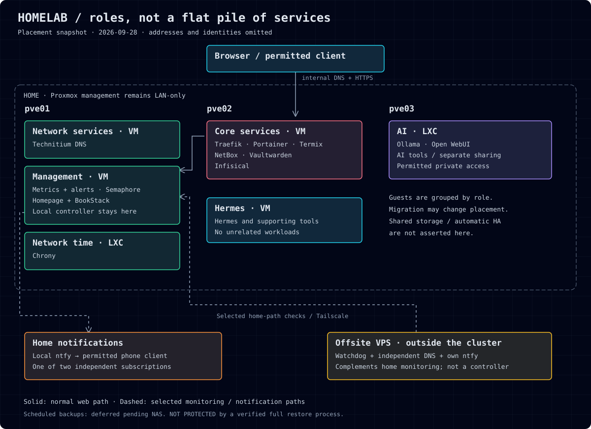

Five-node homelab architecture
Placement observed on 12 November 2026, not a live health dashboard. The diagram shows 17 running guests; the inventory also records four stopped guests.

- Management and core-services remain running but are due for retirement.
- DNS and PostgreSQL members share three physical host failure domains.
- Guest state does not establish application health, failover or recovery.
- The external watchdog is published code, not an observed deployed component.
Standalone SVG · Inventory · Service designs · Verification

The SVG is the single diagram source; this page embeds it rather than maintaining a second map. Offline page: no scripts, trackers, fonts or external dependencies.